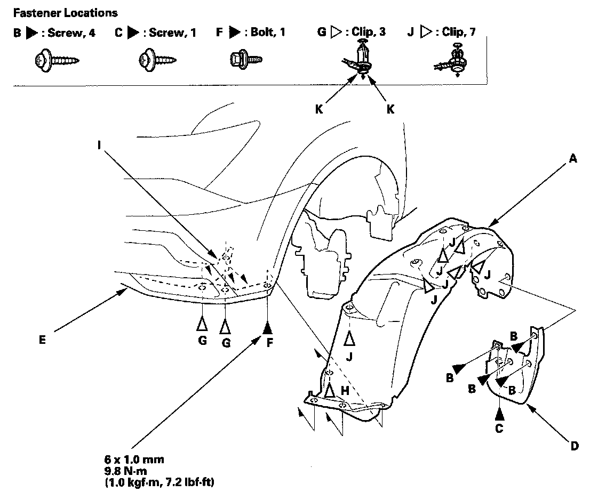

Front Inner Fender
Front Inner Fender ReplacementNOTE:
- Put on gloves to protect your hands.
- Take care not to scratch the body.

1. Remove the front inner fender (A).
1. On the back of the wheel arch, remove the screws (B, C),then remove the splash guard (D).
2. From under the front bumper (E), remove the bolt (F) and clips (G) securing the front bumper and front inner fender.
3. From the wheel arch, remove the clips (H) securing the front splash shield (I) and front inner fender, and remove the clip (J) securing the front inner fender on the body.
4. Pull out the front inner fender.
NOTE: To remove the clips G and H, pry the inner clip up at the edge near the line (K) on its head.
2. Install the inner fender in the reverse order of removal, and note these items:
- If the clips are damaged or stress-whitened, replace them with new one.
- Push the clips into place securely.